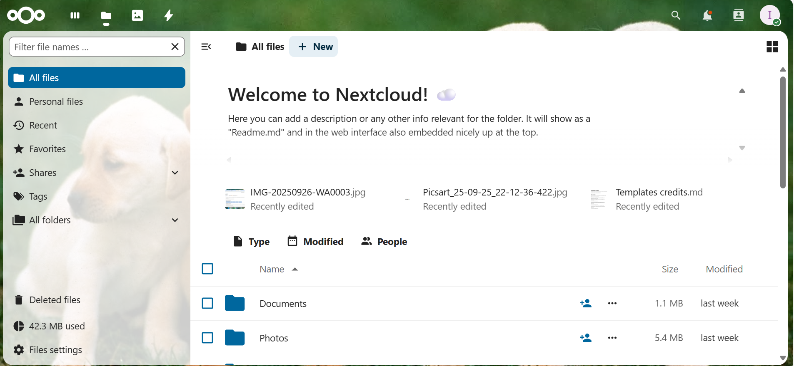

Proyek dan Karya Saya 💡

Pendengar Suara Reong
Project Pendengar sura reong menggunakan aplikasi gambelan bali, saat kita memainkan reong di aplikasi dia akan menentukan nada surara yang didengarkan langsung

Nextcloud
Nextcloud adalah platform produktivitas dan kolaborasi open-source yang bisa Anda pasang di server Anda sendiri (self-hosted). Menyimpan file dan folder (seperti folder "Documents" dan "Photos" di gambar). Mengakses file dari mana saja melalui browser web (seperti yang Anda tunjukkan), aplikasi desktop, atau aplikasi di ponsel. Berbagi file dengan orang lain, baik pengguna di dalam sistem Anda maupun melalui tautan publik.